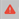
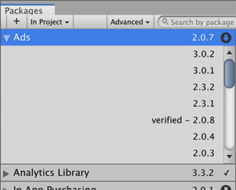

The Packages window displays the list of packages according to the criteria that you select by filtering, including, or searching:
List of all packages available, including preview packages
You can click these expander icons to show and hide the list of versions available for this package.
The package version displays the version of the package that’s installed. If the package is not yet installed, the version that appears is the recommended version.
These icons show you the status of the package:
图标 (Icon)：
描述
A check mark indicates that the package is already installed or enabled.
The download icon indicates that the installed packages have an available update.

An error icon indicates that something went wrong during installation or loading. For more advice on resolving errors, see Error messages.
By default, the Packages window displays the list of All packages with no Preview packages, but you can filter the list to display only packages installed in your Project (including local packages) or display only built-in Unity packages. You can also include Preview packages in the list and search for a specific package by package name, tag name, or package version.
Including Preview packages
Preview packages do not appear by default in the list of packages on the Packages window. This is because preview packages might be unstable, so you should not use them in production.
To include preview packages in the list, select Show preview packages from the Advanced drop-down menu.
Show preview packages
Finding a specific version
To view the list of versions available for a package:
In the list of packages, click the expander icon to the left of the package name.
List with no preview versions
If there are updates available, they are displayed along with the See all versions link.
Click See all versions to see the list of all available versions for that package.

List with preview versions
You can select any of these versions for the current package and see the details specific to that version in the details view.

 You can click these expander icons to show and hide the list of versions available for this package.
You can click these expander icons to show and hide the list of versions available for this package. The package version displays the version of the package that’s installed. If the package is not yet installed, the version that appears is the recommended version.
The package version displays the version of the package that’s installed. If the package is not yet installed, the version that appears is the recommended version. These icons show you the status of the package:
These icons show you the status of the package: